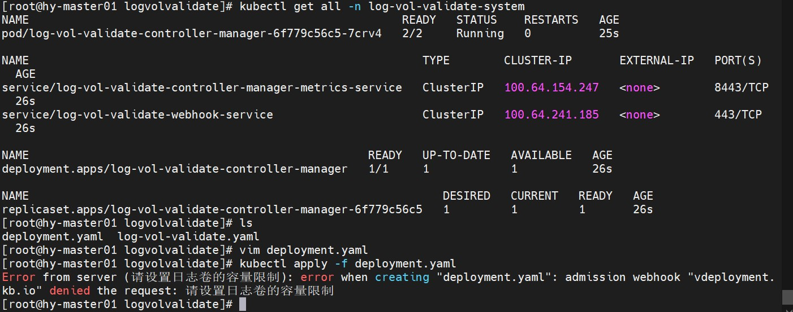
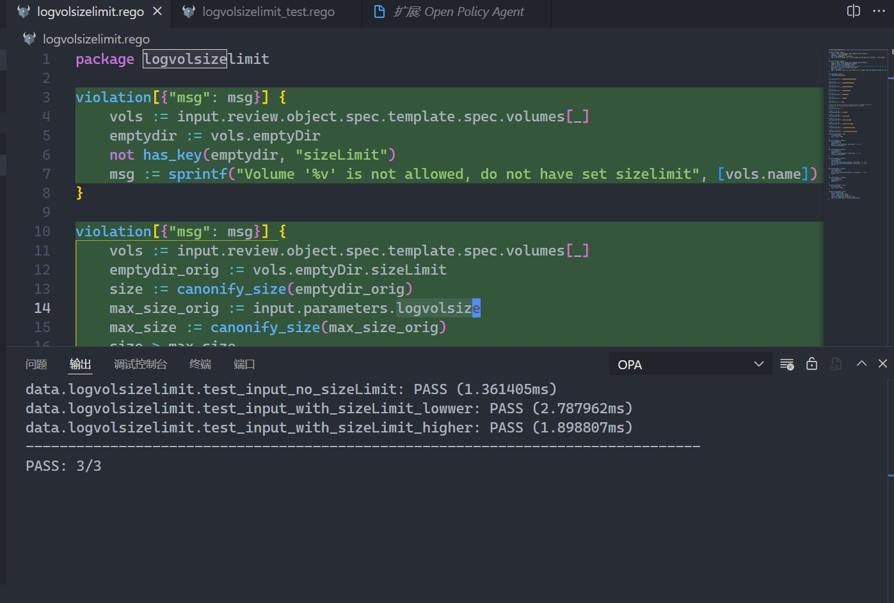
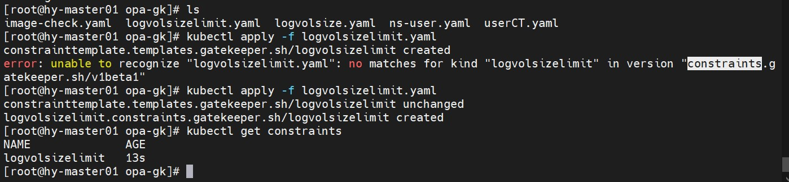
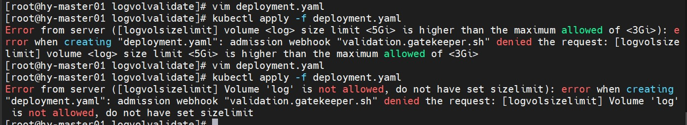

使用 OPA 设置 kubernetes emptyDir 策略
前一阵子，集群的一个节点因为日志卷设置为 emptyDir 导致了驱逐，经过排查有一些 pod 的 emptyDir 没有设置容量限制（sizeLimit）。之前的文章里介绍了 kuebernetes的策略控制器 OPA Gatekeeper ，但由于都是使用官方维护的策略库，并没有时间学习rego 的语法，因此我们先开发开发了一个准入控制器(admission webhook)来控制 emptyDir 的设置 。春节后这两天看了一下 rego ，参考官方的策略库做了emptyDir 的相关策略。
准入控制器
准入控制器的逻辑比较简单，就是请求创建和更新资源的时候，如果有
emptyDir卷则查看是否存在sizeLimit字段。下面给出逻辑代码，开发过程可以参考前面
kubebuilder的文章；1
2
3
4
5
6
7
8
9
10
11
12
13
14
15
16
17
18
19
20
21
22
23
24
25
26
27
28
29
30
31
32
33
34
35
36
37
38
39
40
41
42
43
44
45
46
47
48
49
50
51
52
53
54/*
Copyright 2022 SRE.XGIT.
*/
package v1
import (
"context"
"net/http"
appsv1 "k8s.io/api/apps/v1"
"sigs.k8s.io/controller-runtime/pkg/client"
"sigs.k8s.io/controller-runtime/pkg/webhook/admission"
)
// +kubebuilder:webhook:verbs=create;update,path=/mutate-core-v1-pod,validating=false,failurePolicy=fail,groups=core,resources=pods,versions=v1,name=vpod.kb.io
// PodSideCarMutate mutate Pods
type LogVolValid struct {
Client client.Client
decoder *admission.Decoder
}
func NewLogVolValid(c client.Client) admission.Handler {
return &LogVolValid{Client: c}
}
// PodSideCarMutate admits a pod if a specific annotation exists.
func (v *LogVolValid) Handle(ctx context.Context, req admission.Request) admission.Response {
// TODO
dep := &appsv1.Deployment{}
err := v.decoder.Decode(req, dep)
if err != nil {
return admission.Errored(http.StatusBadRequest, err)
}
volumesList := dep.Spec.Template.Spec.Volumes
for _, volumes := range volumesList {
if volumes.VolumeSource.EmptyDir != nil && volumes.VolumeSource.EmptyDir.SizeLimit == nil {
return admission.Denied("请设置日志卷的容量限制")
}
}
return admission.Allowed("")
}
// PodSideCarMutate implements admission.DecoderInjector.
// A decoder will be automatically injected.
// InjectDecoder injects the decoder.
func (v *LogVolValid) InjectDecoder(d *admission.Decoder) error {
v.decoder = d
return nil
}效果：

gatekeeper 策略
gatekeeper的部署使用就不赘述了，直接上策略代码，这里我们定义里两条策略；- 判断
emptyDir是否设置了sizeLimit字段，如果没有则拒绝创建相关资源。 - 判断
sizeLimit的值是否超过了我们规定的最大容量，如果超过则拒绝。
1
2
3
4
5
6
7
8
9
10
11
12
13
14
15
16
17
18
19
20
21
22
23
24
25
26
27
28
29
30
31
32
33
34
35
36
37
38
39
40
41
42
43
44
45
46
47
48
49
50
51
52
53
54
55
56
57
58
59
60
61
62
63
64
65
66
67
68
69
70
71
72
73
74
75
76
77
78
79
80
81
82
83
84
85
86
87
88
89
90
91
92
93
94
95
96
97
98
99
100
101
102
103
104
105
106
107
108
109
110
111
112
113
114
115
116
117
118package logvolsizelimit
violation[{"msg": msg}] {
vols := input.review.object.spec.template.spec.volumes[_]
emptydir := vols.emptyDir
not has_key(emptydir, "sizeLimit")
msg := sprintf("Volume '%v' is not allowed, do not have set sizelimit", [vols.name])
}
violation[{"msg": msg}] {
vols := input.review.object.spec.template.spec.volumes[_]
emptydir_orig := vols.emptyDir.sizeLimit
size := canonify_size(emptydir_orig)
max_size_orig := input.parameters.logvolsize
max_size := canonify_size(max_size_orig)
size > max_size
msg := sprintf("volume <%v> size limit <%v> is higher than the maximum allowed of <%v>", [vols.name, emptydir_orig, max_size_orig])
}
has_key(object, key) {
type_name(object[key])
}
size_multiple("E") = 1000000000000000000000
# 10 ** 18
size_multiple("P") = 1000000000000000000
# 10 ** 15
size_multiple("T") = 1000000000000000
# 10 ** 12
size_multiple("G") = 1000000000000
# 10 ** 9
size_multiple("M") = 1000000000
# 10 ** 6
size_multiple("k") = 1000000
# 10 ** 3
size_multiple("") = 1000
# Kubernetes accepts millibyte precision when it probably shouldn't.
# https://github.com/kubernetes/kubernetes/issues/28741
# 10 ** 0
size_multiple("m") = 1
# 1000 * 2 ** 10
size_multiple("Ki") = 1024000
# 1000 * 2 ** 20
size_multiple("Mi") = 1048576000
# 1000 * 2 ** 30
size_multiple("Gi") = 1073741824000
# 1000 * 2 ** 40
size_multiple("Ti") = 1099511627776000
# 1000 * 2 ** 50
size_multiple("Pi") = 1125899906842624000
# 1000 * 2 ** 60
size_multiple("Ei") = 1152921504606846976000
canonify_size(orig) = new {
is_number(orig)
new := orig * 1000
}
get_suffix(size) = suffix {
is_string(size)
count(size) > 0
suffix := substring(size, count(size) - 1, -1)
size_multiple(suffix)
}
get_suffix(size) = suffix {
is_string(size)
count(size) > 1
suffix := substring(size, count(size) - 2, -1)
size_multiple(suffix)
}
get_suffix(size) = suffix {
is_string(size)
count(size) > 1
not size_multiple(substring(size, count(size) - 1, -1))
not size_multiple(substring(size, count(size) - 2, -1))
suffix := ""
}
get_suffix(size) = suffix {
is_string(size)
count(size) == 1
not size_multiple(substring(size, count(size) - 1, -1))
suffix := ""
}
get_suffix(size) = suffix {
is_string(size)
count(size) == 0
suffix := ""
}
canonify_size(orig) = new {
is_number(orig)
new := orig * 1000
}
canonify_size(orig) = new {
not is_number(orig)
suffix := get_suffix(orig)
raw := replace(orig, suffix, "")
re_match("^[0-9]+(\\.[0-9]+)?$", raw)
new := to_number(raw) * size_multiple(suffix)
}- 判断
构建测试代码：
1
2
3
4
5
6
7
8
9
10
11
12
13
14
15
16
17
18
19
20
21
22
23
24
25
26
27
28
29
30package logvolsizelimit
test_input_no_sizeLimit {
input := {"review": review([{"emptyDir": {}, "name": "log"}]), "parameters": {"logvolsize": "3Gi"}}
results := violation with input as input
count(results) == 1
}
test_input_with_sizeLimit_lowwer {
input := {"review": review([vol("2Gi")]), "parameters": {"logvolsize": "3Gi"}}
results := violation with input as input
count(results) == 0
}
test_input_with_sizeLimit_higher {
input := {"review": review([vol("5Gi")]), "parameters": {"logvolsize": "3Gi"}}
results := violation with input as input
count(results) == 1
}
review(volumes) = output {
output = {"object": {"spec": {"template": {"spec": {"volumes": volumes}}}}}
}
vol(size) = out {
out = {
"emptyDir": {"sizeLimit": size},
"name": "log",
}
}借助于
vscode的opa插件进行测试，我们可以但看测试结果和测试覆盖率：
部署到
k8s集群：1
2
3
4
5
6
7
8
9
10
11
12
13
14
15
16
17
18
19
20
21
22
23
24
25
26
27
28
29
30
31
32
33
34
35
36apiVersion: templates.gatekeeper.sh/v1beta1
kind: ConstraintTemplate
metadata:
name: logvolsizelimit
spec:
crd:
spec:
names:
kind: logvolsizelimit
validation:
# Schema for the `parameters` field
openAPIV3Schema:
type: object
properties:
logvolsize:
description: "The maximum allowed emptyDir size limit on a volume."
type: string
targets:
- target: admission.k8s.gatekeeper.sh
rego: |
"rego 代码略"
apiVersion: constraints.gatekeeper.sh/v1beta1
kind: logvolsizelimit
metadata:
name: logvolsizelimit
spec:
match:
kinds:
- apiGroups: ["apps"]
kinds:
- "Deployment"
- "DaemonSet"
- "StatefulSet"
parameters:
logvolsize: 3Gi
可以看到，我们在
ConstraintTemplate中定义了crd，并设置了资源名称logvolsizelimit，同时定义了需要传入的参数logvolsize；之后我们根据crd创建了logvolsizelimit资源，主要是定义了匹配的kubernetes资源，然后定义参数的具体值，这里表示emptyDir的sizeLimit不能超过3Gi；需要注意的是，我们把两种资源写到了一起，创建的时候，第二个资源第一次无法创建，需要再执行一次。创建
deployment验证，如下图所示，策略成功生效：